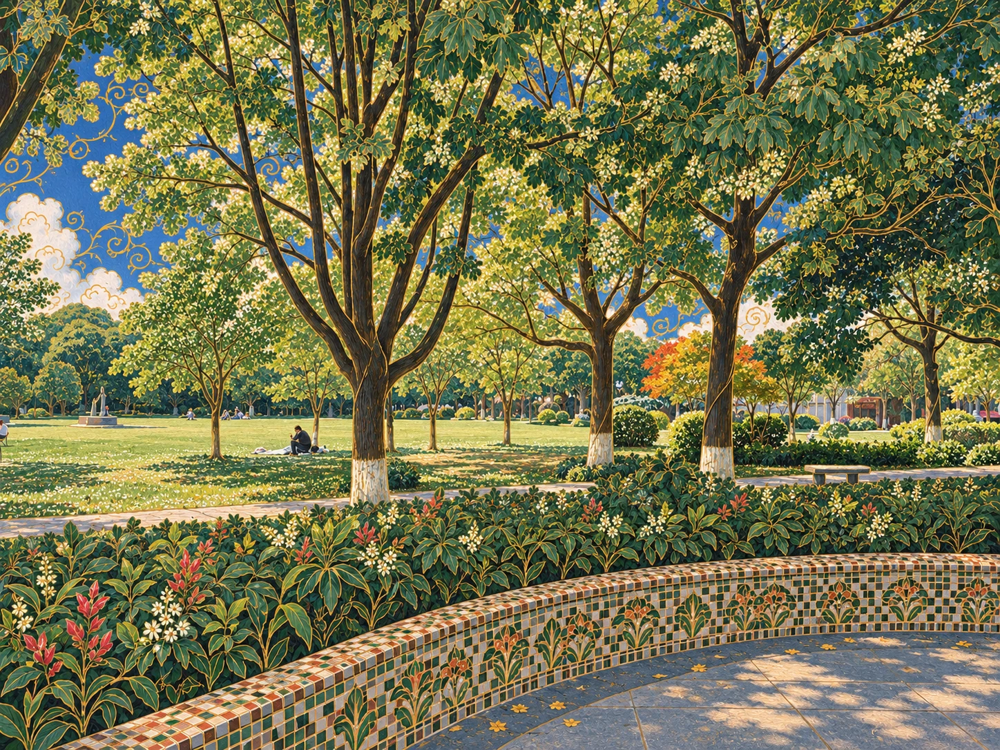
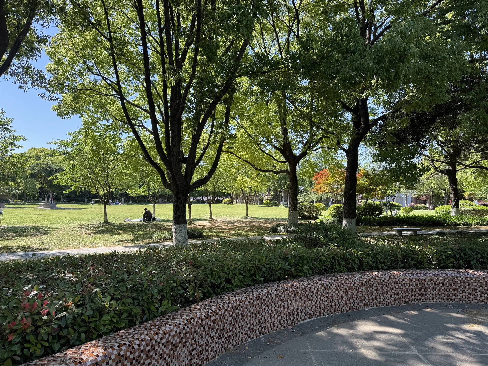

造型
概括的形块
以清楚色面概括原有形体，保持轮廓可读
观察依据与英文描述
细金线勾勒叶脉与枝条；云朵中的卷曲线条，把自然形态转化为装饰图案。
Simplify existing forms into clear color fields with readable contours
参考案例 · AS-002
Golden-Line Pastoral Illustration
作者未核实
以钴蓝天空与清新绿色打开画面。细金线贯穿叶脉、枝条和云纹，让自然景观具有精密的装饰秩序。
选择特征，开始创作 →新艺术与工艺美术气质融合的装饰性田园插画
与金箔森林同属装饰植物语言；这一条目以明亮日光、蓝天和细金线作为主要识别线索。
“新艺术＋工艺美术”是对可见装饰语言的判断，不代表已核实作品所属历史流派。
具体作品中的证据
用户提供 · 作者待补
七个观察维度
下面是一套可取舍的建议。配色来自本页示例，可以改为沿用原图；形状、构图的表述以保留原内容为前提。
造型
以清楚色面概括原有形体，保持轮廓可读
细金线勾勒叶脉与枝条；云朵中的卷曲线条，把自然形态转化为装饰图案。
Simplify existing forms into clear color fields with readable contours
线条
沿原有轮廓与结构布置轻盈的细金线
细金线勾勒叶脉与枝条；云朵中的卷曲线条，把自然形态转化为装饰图案。
Place delicate fine gold lines along existing contours and structures
色彩
以钴蓝、层次丰富的绿色和象牙白形成明亮关系
钴蓝天空与层次丰富的绿色形成主色关系，象牙白花朵和金色线条带出日光。
Use cobalt blue, varied greens and ivory in a bright palette
光影
呈现清透而柔和的日光，避免强烈金属高光
钴蓝天空与层次丰富的绿色形成主色关系，象牙白花朵和金色线条带出日光。
Use clear soft daylight without harsh metallic highlights
构图与空间
保留原有透视，以装饰性前景与较简洁远景形成层次
前景叶片近似平面装饰，树林、溪流与山坡仍有纵深；细节集中在植物和轮廓上。
Keep perspective, contrasting decorative foreground detail with simpler distance
笔触与肌理
让重复纹样带有轻微手工变化，避免整齐复制
密集但清晰的植物重复、细小花朵与纸面笔触，形成壁纸、织毯般的手工观感。
Give repeated patterns subtle handmade variations rather than exact duplication
氛围
营造清新、宁静、理想化的氛围
清新、宁静、理想化的田园世界。迁移时优先保留原场景，不必新增溪流或蘑菇。
Create a fresh, peaceful and idealized atmosphere
细金线勾勒叶脉与枝条；云朵中的卷曲线条，把自然形态转化为装饰图案。
钴蓝天空与层次丰富的绿色形成主色关系，象牙白花朵和金色线条带出日光。
密集但清晰的植物重复、细小花朵与纸面笔触，形成壁纸、织毯般的手工观感。
前景叶片近似平面装饰，树林、溪流与山坡仍有纵深；细节集中在植物和轮廓上。
清新、宁静、理想化的田园世界。迁移时优先保留原场景，不必新增溪流或蘑菇。
用金线重新组织既有植物、云层与建筑边缘，保留明亮空间和视觉留白。
避免装饰线覆盖全部天空，或平均堆满细节，使原场景难以辨认。
本次记录的改绘。保留树木位置、草坪、步道与弧形长椅，以金线植物纹样和明亮色彩统一画面。


原图AI 改绘输入：用户照片 · 输出：AI 改绘
这是一份历史案例记录，包含当次对象和构图；新的改绘请使用上方可选特征组装。
Use case: style-transfer. Edit Image 1, the landscape photograph of a sunny leafy public park, using Image 2 only as the visual style reference. Produce a refined, richly detailed Art Nouveau and Arts and Crafts decorative pastoral illustration of THE SAME PARK. Preserve Image 1's 4:3 landscape framing, viewpoint, composition, main tree placements and branching silhouettes, layered canopy, open lawn, horizontal walkway, dense foreground hedge, sweeping curved low mosaic-tiled bench/wall across the lower foreground, paved foreground, right-hand small bench, distant buildings and small existing people in their positions. The original photographed location must remain clearly recognizable. Transform every part into cohesive hand-painted storybook artwork with the exact visual vocabulary of Image 2: fine warm golden contour lines and leaf veins, elegant organic curves, dense individually painted foliage with patterned botanical repetition, deep forest green, jade and fresh spring greens, rich cobalt-blue glimpses of sky, ivory and ochre-gold highlights, tiny warm red accents, intricate tapestry-like detail, subtle gouache/oil paint texture on paper, luminous gentle daylight, enchanting peaceful pastoral mood. Reinterpret the foreground hedge as exquisite overlapping botanical leaves and tiny floral motifs with delicate gold outlines; reinterpret the curved tiled bench as an ornate small mosaic of green, ivory, russet and gold while retaining its original shape and position. Stylize existing tree trunks with warm gold line work, retaining pale bases. Use graceful gold swirling ornamental accents sparingly within the existing visible blue sky areas, as in the reference. Make this a substantial painted style transformation, fully illustrated, elegant and richly crafted, with refined fine line work and lush detailed plants throughout. Preserve scene content; do not import the reference's river, hills, mushrooms or new animals or people. No frame, lettering, signature, watermark, or photographic leftovers.
保留的完整模板独立于特征选择器，适合阅读与对照。若只想迁移部分特征，请使用“创作提示词”。
将输入照片完整改绘为新艺术与工艺美术气质融合的装饰性田园插画。照片决定内容、视角与构图；附加参考图仅提供风格语言。保留主体数量与身份、主要物件位置、建筑或地形结构、画幅比例。使用优雅的有机曲线、细金色轮廓与叶脉、密集而有节奏的植物纹样。以钴蓝、森林绿、翠绿、象牙白和赭金构成明亮配色，用柔和日光形成清新宁静的童话田园气氛。在原图已有植物、云层、织物或装饰表面加入图案，保留主体附近的视觉留白与空间纵深。整体呈精细手绘与轻微纸面颜料质感。不要导入参考中的溪流、山丘、蘑菇或新人物，不要添加文字、水印或边框，不要只叠加色彩滤镜。
Transform the input photograph into a refined decorative pastoral illustration blending Art Nouveau linework with an Arts and Crafts-like botanical pattern language. Let the photograph determine subjects, viewpoint and composition; use references for style only. Preserve subject count and identities, key object positions, architectural or landscape structure, and aspect ratio. Use graceful organic curves, fine golden contours and leaf veins, and dense but rhythmic botanical repetition. Build a luminous palette of cobalt blue, forest and spring greens, ivory and ochre-gold, with gentle daylight and a peaceful fairy-tale pastoral mood. Ornament existing foliage, clouds, textiles or decorative surfaces while retaining visual breathing space and readable depth. Keep the scene consistently hand-painted with subtle pigment-on-paper texture. Do not import rivers, hills, mushrooms or extra people. No lettering, watermarks, borders or a simple color-filter overlay.
这里说明视觉语言的联系，不据此判断历史归属或原作作者。
逐图出处与尚未确定的信息见各图说明；背景资料不自动成为本图的作者证据。